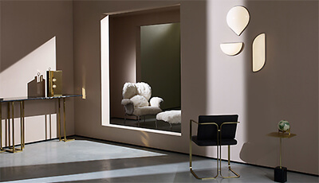
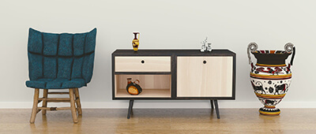
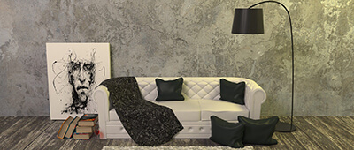
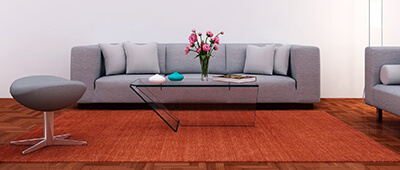
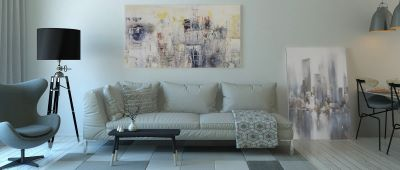
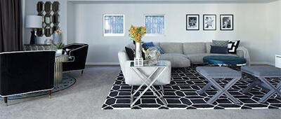
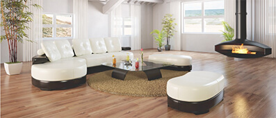
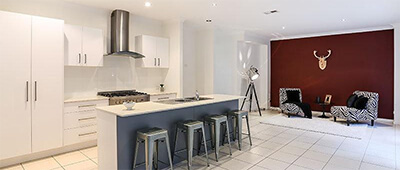

With many people’s attitudes on life changing , and many wishing they could get away this year, we take a look ahead at the interior design trends for 2021
Interior design is the art and science of enhancing the interior of a building to achieve a healthier and more aesthetically pleasing environment for the people using the space. An interior designer is someone who plans, researches, coordinates, and manages such enhancement projects. Interior design is a multifaceted profession that includes conceptual development, space planning, site inspections, programming, research, communicating with the stakeholders of a project, construction management, and execution of the design.
VIEW INTERIOR DESIGN TRENDS'A home office must be designed as a space to induce thought,' says Andrew Martin's Martin Waller. 'It wants to have crisp, clear lines, comfort and creative inspiration by way of artwork or patterned wallpaper. A desk light is a good way to add style and design-led angles to an office as well as being imperative for spot lighting.'
Detail View 
Inspired by earthy color palettes and warm, natural textures, the Global Influence trend pairs perfectly with wooden, woven and rattan home accessories. It’s bold safari feel is influenced by wildlife and African plains.
‘We’ve seen ‘Global Influence’ as a key trend for the season across both interiors and fashion.’
Everyone's two favorite patterns combine for this fun new trend that mixes the classic check and stripe with new-season colors.
Mix and match patterns in different scales to create the right balance. In this bedroom the delicately patterned cushions and eiderdown soften the effect of the stripes
Nature, in the broadest sense, is the natural, physical, material world or universe. "Nature" can refer to the phenomena of the physical world, and also to life in general. The study of nature is a large, if not the only, part of science.
Northern Europe is a loosely defined geographical and cultural region in Europe. Narrower definitions may describe Northern Europe as being roughly north of the southern coast of the Baltic Sea, which is about 54°N.
The Modern Style is a style of architecture, art, and design that first emerged in the United Kingdom in the mid-1880s. It is the first Art Nouveau style worldwide.
Vintage, in winemaking, is the process of picking grapes and creating the finished product—wine. A vintage wine is one made from grapes that were all, or primarily, grown and harvested in a single specified year.
Also referred to as Hollywood Regency, Hollywood Glam is a design style that tends to be luxurious, over-the-top and opulent. It’s a dramatic design style, perfect for a homeowner who enjoys making a statement.
Blue and white striped patterns for pillows, large windows, white plush sofas, and painted white wood are also common fixtures of the classic Coastal/Hampton style.
The minimalist concept is one that’s popular here in Australia. It takes notions of modern design and simplifies them further.Colour palettes are neutral and airy; furnishings are simple and streamlined.
Sometimes, a piece of furniture comes along and changes everything around us. If a painting is meant to be looked at and fashion meant to be worn, furniture is meant to be lived in—slept in, worked in, sat in. It dictates how we interact with our surrounding spaces, how we go about our every day. Even during the most mundane moments: George Nelson’s collection for Herman Miller, for example, created the template for cubicles, now omnipresent in office buildings around America.
read more